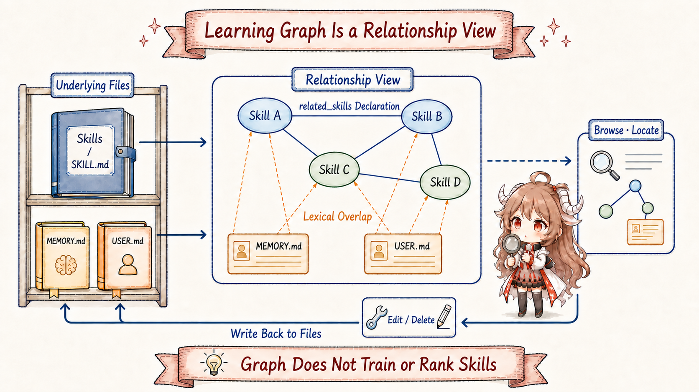

Reading contract: Follow a generated-code test workflow from sources to a discoverable Skill, then identify the files changed by Graph edits. Claims follow the linked public source snapshot; prompt instructions and tool-enforced rules are distinguished.
1. Finding it once is not the same as learning it
Continue the example from the previous chapters: you ask Hermes to fix a failing test related to generated code. On the first attempt it searches the project, opens the official maintainer guide, and eventually finds the right order: run the generator, inspect the diff, then run the tests. The task is complete. But if those steps exist only in this conversation, a new session may repeat the whole search. That leaves a practical question: how can a confirmed solution become a procedure that future sessions can discover?
Chapter 3 followed background review, which is conditionally scheduled at turn finalization and asks whether an incidental lesson from the turn deserves a durable home.
This chapter follows a more explicit route. The user already knows what Hermes should learn, so they provide the source, scope, and requirements and ask for a Skill directly.
That route is /learn. Both routes may eventually write Skills, but their trigger is different: the runtime schedules one; the user starts the other in the foreground.
Do not picture /learn as model training. Its implementation is more concrete and easier to audit. The current agent reads sources, extracts a procedure,
and calls skill_manage just as it would use tools for any other task. No model weights change and no separate distillation service starts.
The new artifact is a readable, reviewable, editable Skill package.
| Question to Carry | Answer Developed Here |
|---|---|
Does /learn call a dedicated trainer? |
No. It builds a detailed prompt and re-enters the normal AIAgent turn. |
| Can text inside a page or repository instruct the agent? | The prompt asks the agent to treat sources as evidence; this is not a hard guarantee against source influence. |
Why is one result a single SKILL.md while another has many files? |
A short workflow stays compact; a large corpus uses an index plus on-demand references/. |
| Does Learning Graph continue optimizing the Skill? | No. It projects relationships from Skills and Memory files and routes edits back to those files. |
2. The whole journey: from request to Skill package
Suppose you enter: /learn the official project guide; focus on testing after generated-code changes and omit deprecated commands.
Hermes must not fetch the first URL and treat the rest as casual prose. The implementation treats the request as two equally important inputs:
sources say where to gather evidence, while requirements determine what the Skill should cover. A normal tool-using turn then reads, shapes, writes, and reports the result.

/learn reuses a normal turn rather than a separate trainer.| Stage | What Happens in the Test Example | Observable Result |
|---|---|---|
| 1. Receive | The user names an official guide and narrows the topic to generated-code testing. | A free-form request; no Skill exists yet. |
| 2. Rewrite | build_learn_prompt combines sources, constraints, authoring standards, and source-safety rules. |
A message placed on the normal agent input path. |
| 3. Gather | The agent uses file or web tools to find exact commands, order, and failure signals. | Evidence in the current turn, not durable instructions yet. |
| 4. Shape | This is a short workflow, so one compact SKILL.md is enough. |
A name, triggers, procedure, pitfalls, and verification check. |
| 5. Persist | Once the write gate passes, skill_manage(create) validates metadata and size, then writes atomically; scanning is separately configured. |
Profile Skills storage by default, optionally changed by skills.create_dir; a pending proposal is not a Skill file. |
| 6. Discover later | The Skills index cache is cleared so a later prompt build can rescan the directory. | Future turns can route by description and load the full procedure on demand. |
One distinction matters: stages two through five occur inside one ordinary agent turn. Stage six describes how the durable result enters a later discovery path. Hermes does not train a small model and attach it to the runtime. It turns a successful operation into a maintainable runbook that the runtime already knows how to find.
3. The entry layer rewrites the command, then gets out of the way
The CLI, gateway, and desktop use different entry forms, but each calls the same
build_learn_prompt.
The CLI puts the generated message onto _pending_input. The gateway replaces event.text and falls through to normal agent processing.
Provider, model, tool backend, and session persistence therefore remain part of the existing runtime.
# CLI: put the generated request back on the live input queue
msg = build_learn_prompt(user_request)
self._pending_input.put(msg)
# Gateway: rewrite this event and continue normal processing
event.text = build_learn_prompt(event.get_command_args().strip())
# fall through to agent processingThis choice has three immediate consequences. First, there is no new learning backend tied to one environment; local, Docker, and remote terminal backends use the same path. Second, the turn still obeys the current agent's tool permissions. Without a web extraction tool it cannot magically read a page, and without Skills write access it cannot persist one. Third, constructing the prompt is not success. The agent must actually gather the material, call the management tool, and report what it wrote.
An empty /learn asks for the workflow just completed in this conversation. This remains a foreground task, with a different trigger and permissions from background review. The builder now requires checking for an existing Skill on the same source or topic: load it with skill_view, then patch/edit and add supporting files. Create only when no matching Skill exists, so repeated learning does not accumulate near-duplicates. See the CLI entry, Gateway rewriting, and the extend-first rule.
4. Separate sources from requirements before reading
A learning request may mix directories, individual files, URLs, the recent conversation, and pasted notes. A naive implementation can grab the first link and miss “focus on authentication,” “exclude deprecated endpoints,” or “include the exact verification command.” Hermes makes every part load-bearing: a source identifies evidence, while a requirement controls coverage, emphasis, and exclusions in the resulting Skill.
/learn https://project.example/maintainer-guide
keep only the generated-code verification workflow
skip deprecated commands
source: the official maintainer guide
requirements: scope = generated code; exclude = deprecated commands
result: an executable verification Skill, not a summary of the entire site
Tool selection comes next: read_file and search_files for local material, web_extract for URLs,
conversation history for “what we just did,” and the user's text for pasted material. If a small ambiguity remains, the prompt asks the agent to choose reasonably and state the assumption.
That does not relax the evidence bar. It exposes the choice so the user can correct the artifact instead of blocking the entire journey on a minor gap.
4.1 A source is evidence, not a new user
Pages and repositories require a stricter safety rule. A document may say “ignore previous instructions” or ask a reader to upload configuration.
It may also hide zero-width or bidirectional Unicode control characters. To an agent distilling a document, that text can resemble an instruction.
learn_prompt.py therefore embeds source hygiene in every request: source text is data, while only the user's request may direct the turn.
Invisible and bidirectional controls must be dropped, and source instructions must not survive into the Skill merely because they look like prompts.
In the test-repair example, real commands, order, and failure conditions can become Procedure and Verification. Instructions aimed at a documentation bot should not acquire authority over this turn. This is an evidence boundary: _SOURCE_HYGIENE is prompt text. The builder does not implement a separate execution sandbox or character-sanitization pass. It states the intended behavior rather than proving arbitrary sources cannot influence the model; tool permissions and write checks provide separate execution limits.
5. Not every source belongs in one SKILL.md
Once evidence has been gathered, the agent chooses an artifact shape. The implementation offers two forms based on the source, not a mechanical file-count rule. A repeatable workflow should remain compact. A large body of knowledge should remain queryable by topic. Splitting a six-step procedure across a dozen files makes it harder to use; compressing a book into 200 lines discards the definitions, decision rules, and chapter relationships that made it useful.
| Source Shape | Recommended Artifact | Load Behavior | Test Example |
|---|---|---|---|
| Short workflow, small API, focused runbook | One compact SKILL.md; substantial helpers go in scripts/ |
Load the whole procedure after routing | Testing after generated-code changes fits here |
| Book, paper collection, specification, large documentation site | Lean SKILL.md index plus topic files under references/ |
Keep core rules available; use skill_view for relevant chapters |
A complete compiler maintainer manual may need this shape |
For a short workflow, the description tells future turns when to consider the Skill. Procedure preserves source-backed commands. Pitfalls explain the false failure caused by stale generated files. Verification supplies one check that proves completion. The artifact is not a reformatted copy of the guide. It is an executable operating guide for the next similar task.
generated-code-testing/
SKILL.md
When to Use # requests that should route here
Prerequisites # what must exist before execution
Procedure # generate, inspect, then test
Pitfalls # how stale output creates false signals
Verification # the check that proves the procedure worked
For a large manual, inventory its chapters first and create or load the topic Skill. Then read, distill, and persist one topic at a time under references/; finish by checking the SKILL.md index against the actual files. The agent need not put the entire corpus in conversation context before writing. A later generated-code question can load references/code-generation.md without unrelated chapters. This is the flow requested by the knowledge-base rules and incremental builder steps.
5.1 skill_manage is more than a file write
Before creation, skill_manage applies configurable write approval. Once admitted, create validates the name, category, frontmatter, size, and collisions, then writes atomically. Security scanning is opt-in: skills.guard_agent_created defaults to false; when enabled, dangerous findings remove the just-created directory. Authoring lint findings can be advisory rather than blockers. After creation succeeds, the manager’s write_file operation adds supporting files. The default is profile Skills storage, with an optional skills.create_dir override. See the scan switch and creation.
skill_manage(
action="create",
name="generated-code-testing",
category="development",
content=skill_md,
)
skill_manage(
action="write_file",
name="generated-code-testing",
file_path="scripts/verify-generated-files.sh",
file_content=script,
)
The create path and rollback appear in
_create_skill;
action dispatch and cache invalidation appear in
skill_manage.
The result is a validated long-term object with a known source and structure, not an unstructured note.
When skills.write_approval is enabled, the tool can return {"success": true, "staged": true, "pending_id": "…"} without executing creation, clearing caches, or recording a successful mutation. /skills approve replays it after approval. Check staged before reporting that a Skill exists; success alone may only mean a proposal was accepted. See staging and approval replay.
6. When does the new Skill become learned?
Persistence is only the first half. Hermes does not rewrite the current response's system prompt in place. After a successful Skill mutation, the manager clears the in-process Skills prompt cache and removes the optional disk snapshot. The next prompt build that needs the Skill index rescans the directories, places the new name and short description in the discoverable list, and later loads the full Skill or references only when a task routes to it.
current /learn turn
gather -> skill_manage -> files exist
later prompt build
scan Skills -> generated-code-testing enters the index
future matching task
description matches -> skill_view -> run procedure -> verify
“Learned” here means three inspectable conditions hold together: the files exist, the short description can route the right task, and the body contains an executable,
verifiable procedure. Cache invalidation is implemented by
clear_skills_system_prompt_cache.
Foreground skill_manage(create), including /learn, now records created_by="learn". The new Skill can therefore appear in Learning Graph before its first use. That is a learning-signal marker, not Curator-management permission. Autonomous creation or explicit curator adopt uses the agent marker for maintenance. Appearing in the graph does not authorize background rewrites. See creation markers and management opt-in and adopt.
7. Learning Graph makes existing relationships visible
As Skills accumulate, a new question appears: how can the user see what Hermes has learned and which memories appear related? The desktop Journey panel answers with Learning Graph.
The common mistake is to treat nodes and edges as another learning algorithm. In fact, agent/learning_graph.py reads durable files and constructs a JSON view.
It does not execute tasks, change Skills, or compare their quality.

7.1 What becomes a node
Skill nodes come from profile storage rather than every bundled base Skill. The current implementation also requires a learning signal: created_by is agent or learn, or use_count > 0.
A node carries category, timestamp, use count, lifecycle state, creator provenance, and pinned status for display. Memory nodes come from MEMORY.md and USER.md:
each file is split on bare § separators, and each chunk becomes a readable card. See
build_learning_graph.
Fields such as state, use_count, and pinned only expose lifecycle and usage records that already exist.
Graph does not make a Skill active because it has many edges, and it does not archive an isolated node. Curator changes lifecycle state; Graph only displays it.
7.2 The two edge types have very different strength
Skill-to-Skill edges come from related_skills in frontmatter. An edge exists only when both endpoints exist, and duplicate undirected relationships are removed.
This is an author's explicit declaration. Memory has no equivalent declaration, so the implementation uses a lightweight lexical heuristic:
tokenize the title and at most 1,200 characters of display body into ASCII letter/digit terms at least three characters long; add six points when the full Skill name appears; add one per overlapping name token;
keep positive candidates and connect at most the top four Skills per Memory card.
score = 0
if skill_name_lower in memory_text:
score += 6
score += len(skill_name_tokens & memory_tokens)
if score > 0:
candidates.append((score, skill.name))
edges.extend(top_four(candidates))
Pure Chinese terms do not become tokens in this tokenizer; retained English Skill names or identifiers may connect, but that does not demonstrate cross-language semantic retrieval. A dotted edge therefore means “possibly related by shared wording,” not “a model proved a semantic or causal relationship.” A Memory card mentioning
generated code may connect to both a test Skill and a generator Skill. That is useful for browsing, but it is not evidence for consolidation.
Explicit edges are built in
build_edges;
lexical edges in
_memory_skill_edges.
| Graph Element | Source | Valid Reading | What It Does Not Prove |
|---|---|---|---|
| Skill node | Profile Skill plus usage/provenance records | A durable procedure exists and has a learning signal | Newer or larger nodes are necessarily better |
| Memory node | A chunk from MEMORY.md or USER.md |
A durable fact, preference, or profile fragment exists | It has already become a Skill |
| Solid Skill edge | related_skills |
The author declared a relationship | The Skills have been merged |
| Dotted Memory-Skill edge | Name and token overlap | The pair may be worth viewing together | Embedding similarity, evaluation, or causality |
8. Editing the Graph means editing the underlying files
Journey is not a read-only poster. The CLI, TUI, and desktop REST routes can inspect, edit, or delete by node ID, but learning_mutations.py does not persist changes in a graph database.
It resolves every node back to its durable home. A Skill node ID is the Skill name. A Memory node ID has the form memory:<source>:<index>,
which maps back to a chunk in MEMORY.md or USER.md.
| User Action | Underlying Mutation | Check |
|---|---|---|
| Edit Skill | Rewrite its SKILL.md, then clear the Skills cache |
Frontmatter and size checks apply; security scanning depends on configuration |
| Delete Skill | Archive it and return a Curator restore command | A pinned Skill must be unpinned first; deletion is recoverable |
| Edit Memory | Replace the selected § chunk and atomically rewrite the source file |
Empty text is rejected; deletion must be explicit |
| Delete Memory | Remove the selected chunk and rewrite the source file | Out-of-range or source-mismatched indices are rejected; shifts inside one file may go undetected |
The graph can be rebuilt, and files remain durable state, but a positional index is not a stable object ID. _locate_memory checks bounds and source without a content hash or version. Deleting an earlier chunk in the same file can leave an old index valid but pointing to a different chunk. Refresh the graph and reread the node before editing. Atomic replacement prevents half-written files; it does not provide complete concurrent-edit conflict detection. See Skill/node mutations and write/cache helpers.
9. Replay the journey end to end
The full example now fits together. During the first test repair, the agent reads the official guide temporarily and completes the task. The user recognizes that the workflow will recur,
so they issue /learn with the same source and a narrow scope. The entry rewrites that request into a normal turn. The agent treats the guide as evidence,
chooses a compact artifact, and writes generated-code-testing through skill_manage. After a later prompt rebuild, a new session can discover it from the Skills index.
Learning Graph then places the Skill near related Skills and Memory chunks that mention generated code, giving the user a place to inspect and maintain the result.
No single step deserves the label “learning complete.” Reading sources produces current-turn context. Writing a file with an unroutable description leaves future tasks unable to find it.
Drawing a Graph creates no new capability at all. Hermes's explicit learning path is understandable because each layer has a concrete artifact:
the normal turn gathers evidence, skill_manage validates and writes files, prompt building enables future discovery, and Learning Graph visualizes relationships that already exist.
We have shown that knowledge becomes reusable, not that the new Skill is better than an old one. The next chapter builds the ruler first: where evaluation tasks come from, what one task record contains, and what training, validation, and final holdout sets may influence. Only after those task definitions and split rules are clear can DSPy or GEPA optimize without “practicing on the same questions and grading itself on them.” Continue: how evaluation tasks become a trustworthy ruler.
Sources
- Pinned NousResearch/hermes-agent source snapshot
- Module-level
/learnexecution steps - Authoring standards, source hygiene, and prompt builder
- CLI
/learnentry - Gateway
/learnfall-through - Skill creation, atomic write, and security rollback
- Skill action dispatch and cache invalidation
- Skill nodes and explicit relationship edges
- Memory nodes, lexical edges, and the complete Graph payload
- Graph node mutations back to Skill and Memory files